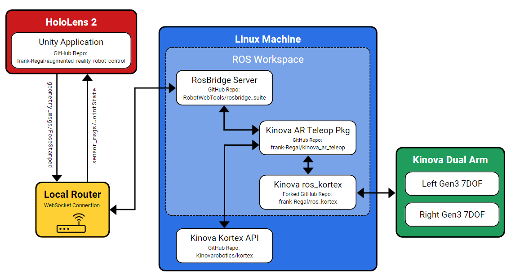

During my summer internship at Argonne National Labratory in the Robotics and Augmented Reality Test Lab, I was tasked with
researching new ways to enable remote operation of hot cell and glove box work for scientist across campus. I was able to
use a Microsoft HoloLens 2 Augmented Reality device to track a users hand and visualize a holographic replica of a physical
dual arm setup. I was responsible for setting up two brand new Kinova Gen3 arms and setting up the communication pipeline
between the HoloLens 2 and the Kinova Arms. At the end of my summer internship, users were able to remotely visualize and control
a holographic replica of the kinova dual arm setup from a remote location and use their hands to actually move the arms.
A Microsoft HoloLens 2, ROS packages, and Kinova Robotic's Gen3 robotic arms were combined to create a framework that allows remote operation via natural controls. Unity game engine and ROS package scripts created the communication pipeline required to communicate back and forth between the headset and robotic arms. With the augmented reality application scene setup, a user can manipulate the robotic arms with a pinch, using their thumb and index finger on the virtual arm grippers. The HoloLens 2 tracks the pose of the hand positioning. Those hand poses convert to serialized messages and are sent to an Ubuntu machine over a wireless network acting as a control station server. This server deserializes the messages and broadcasts them to specific scripts running on the server and robotic arms that interpret the messages and converts them to twist commands. When the robots move their position, the HoloLens 2 receives those location messages of the robotic arms through the reverse route, and the virtual arms within the HoloLens 2 send updates accordingly. Through this configuration, a user has an experience that allows them to see precisely the position of the robotic arms in the hot box from remote locations and the ability to control them effortlessly.

As shown in the overview figure above the Unity game engine was used to build the AR application.
The game engine application provides HoloLens 2 users with virtual representations of the hot box and read the hand tracking data from the HoloLens. The Unity application on the HoloLens 2 publishes the hand positions and subscribes to the robotic arms' joint positions on ROS topics published on a RosBridge server. These ROS topic messages are standard PoseStamped and JointState ROS messages for the hands and robot joint positions, respectively. Before the Unity application sends the messages over the wireless network to the server, the Unity application serializes the messages into a standard JSON format. This JSON format allows for rapid translation of data across a local router.
When the serialized ROS messages leave the HoloLens 2, a ROS package called RosBridge, running on a Linux server, begins to receive these messages, deserializes them, and broadcasts them locally to the ROS nodes on the Linux machine. One specific node is the Kinova AR Teleop Package. This custom ROS package takes the PoseStamped positions of the hands that the HoloLens published and converts them to a linear and angular velocity that the robots understand, called a Twist message. After converting to a Twist message, the Kinova AR Teleop Package publishes the new Twist message to the Kinova ROS Kortex package. This package is the low-level ROS package that sends the move commands to the robots. The ROS Kortex takes the Twist messages, calls the internal inverse kinematic solver, and sends a move command to the arms. Once the arms move, the ROS Kortex package takes the continuously published JointState information and publishes this back to the Kinova AR Teleop Package. The messages are then packaged, serialized, and sent back to the HoloLens 2 device across the network. The HoloLens 2 finally interprets the message, deserializes, and then updates the virtual representation position of the holographic Kinova arms in the Hololens 2 so that the user can see its new position from a remote location.
Watch my final presentation for the 2022 ORISE Ignite Talk below. Reference:
2022 Oak Ridge Institute for Science and Education!